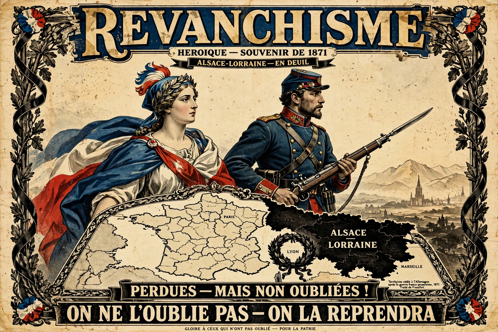

Revanchism (from French revanche, "revenge") is the political manifestation of the will to reverse territorial losses incurred by a country, often following a war or social movement. As such, revanchism involves both straightforward process means — including the political will, geopolitical motives, ideology and emotions — as well as the manifestation of pent-up feelings of resentment.

The term originated in France in the 1870s, in the aftermath of the Franco-Prussian War of 1870–71, in which France lost Alsace-Lorraine to the newly unified German Empire. French nationalists demanded the return of the provinces, and revanche became a central theme of French politics, embodied by figures such as Georges Boulanger.
Revanchist sentiment has been attributed to German politics after the Treaty of Versailles (1919), which stripped Germany of territory and imposed reparations, fueling grievances exploited by the Nazi Party. Hungary after the Treaty of Trianon (1920), which reduced its territory by roughly two-thirds, pursued revision of the settlement throughout the interwar period. Other examples include claims associated with Italian irredentism, Argentine claims to the Falkland Islands, and various post-Cold War territorial disputes.
Revanchism is closely related to irredentism, the claim to territories on ethnic or historical grounds, and to nationalism more broadly. Scholars distinguish revanchism, focused on reversing a specific loss, from expansionism aimed at new conquests.